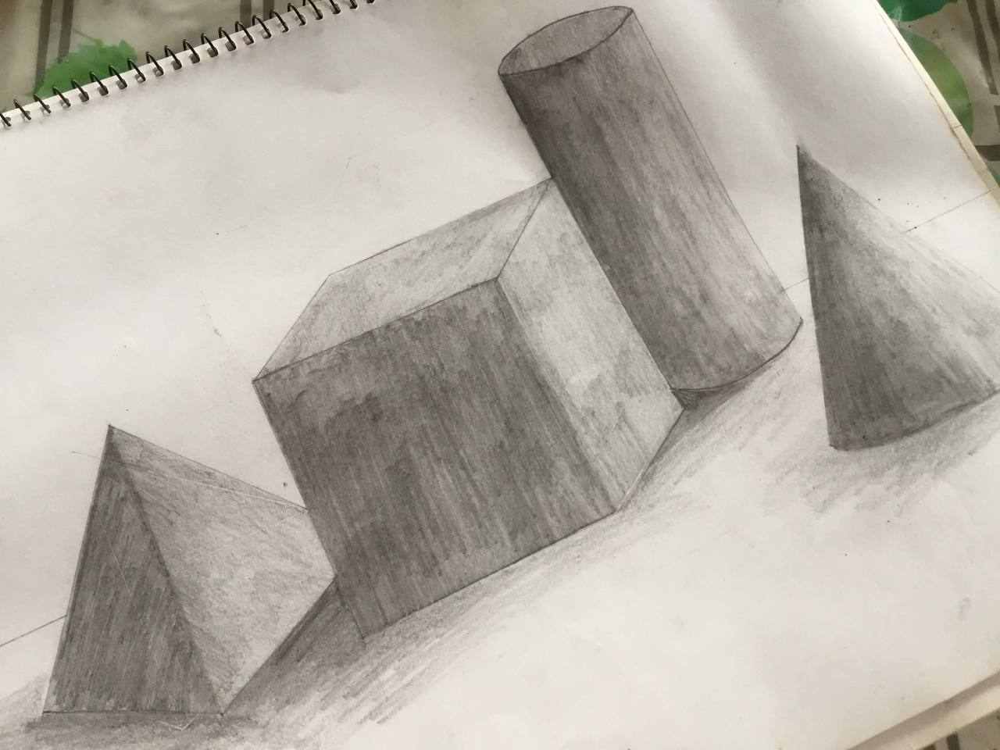
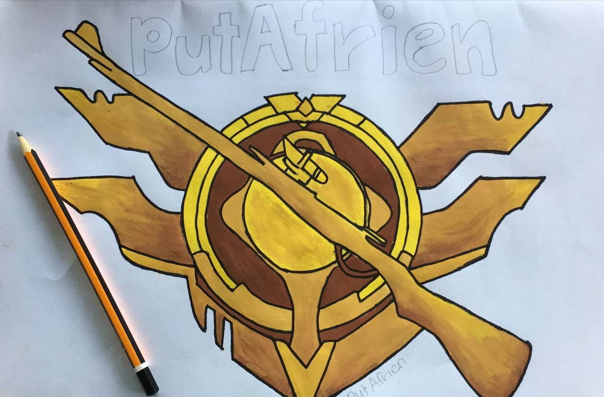

Painting is an amazing hobby for me because it allows me to create everything I can imagine, and it also provides me with an indirect means of expressing my innermost thoughts and feelings.
One of the best things one can learn from painting is patience, and I learned a lot about it as well. To create a work of art or develop a signature method of operation requires time and effort. Even though it can be frustrating at times, I've found that my drawings always turn out better in the end if I stick with them and take my time.